Quero abrir uma empresa
Constituição e arranque · Faturação · RCBE · Primeiras obrigações
04 · Guias e recursos
Guias completos, respostas rápidas, glossário contabilístico e fiscal, checklists e fontes oficiais: uma biblioteca de referência para compreender e organizar a contabilidade da sua atividade.

Cada guia começa pela resposta essencial, apresenta um índice, desenvolve os passos práticos, reúne uma checklist e indica fontes oficiais e serviços relacionados.
Vendas, despesas, bancos, plataformas, salários, contratos e movimentos por esclarecer.
Abrir guia02Sistema contabilístico portuguêsDo documento ao registo, balancete, demonstrações financeiras e informação fiscal.
Abrir guia03Abrir uma empresaConstituição, início de atividade, capital, RCBE, faturação, acessos e primeiros passos.
Abrir guia04Lucro, caixa e tesourariaPorque o resultado contabilístico e o dinheiro disponível podem contar histórias diferentes.
Abrir guia05Primeiro trabalhadorAdmissão, dados contratuais, processamento salarial, custos e rotina mensal.
Abrir guia06Fecho anual e inventáriosBancos, saldos, inventários, ativos, trabalhadores, Modelo 22, IES e dossiê fiscal.
Abrir guia07Regime simplificado ou contabilidade organizadaCritérios para comparar os dois enquadramentos sem conclusões automáticas.
Abrir guiaConstituição e arranque · Faturação · RCBE · Primeiras obrigações
Documentação mensal · Bancos · Plataformas · Arquivo
Primeiro trabalhador · Salários · Admissões
Comparar regimes · IVA · IRS · Segurança Social
Fecho e inventários · Reconciliações · Obrigações anuais
Plataformas · Comissões · Pagamentos · Moedas · Reconciliações
Uma lista operacional para reunir os elementos que a contabilidade precisa em cada período.
ChecklistContas, acessos, faturação, documentos societários e organização inicial.
ChecklistDados do trabalhador, vínculo, remuneração e informação para processamento.
ChecklistBancos, clientes, fornecedores, inventários, ativos, contratos e trabalhadores.
O glossário explica termos contabilísticos, fiscais, empresariais, salariais e de faturação, com exemplos simples e ligações para os guias em que cada conceito é desenvolvido.
Utilize a pesquisa ou abra uma pergunta. A informação é geral e deve ser confirmada de acordo com cada situação.
Nenhuma pergunta corresponde à pesquisa. Faça-nos a pergunta diretamente.
Idealmente, antes de iniciar a atividade, constituir uma empresa, emitir a primeira fatura ou tomar uma decisão com impacto fiscal.
As sociedades sujeitas a contabilidade organizada necessitam de Contabilista Certificado para assegurar a contabilidade e as obrigações associadas.
Faturas, recibos, extratos bancários, despesas, elementos salariais, contratos e outros documentos relacionados com a atividade.
Apresenta movimentos e saldos das contas e ajuda a acompanhar rendimentos, gastos, bancos, clientes, fornecedores e obrigações.
Não. Vendas por receber, pagamentos, inventários, investimentos e impostos podem separar o resultado do dinheiro disponível.
A comparação depende dos rendimentos, custos, obrigações, investimento, necessidade de informação e evolução prevista.
É um adiantamento de imposto efetuado no pagamento de determinados rendimentos e considerado no acerto final.
É necessário organizar documentos, acessos, responsabilidades, informação contabilística e datas de transição.
A Modelo 22 está ligada ao apuramento anual do IRC; a IES agrega informação contabilística, fiscal e estatística.
Identificação, vínculo, data de admissão, remuneração, horário e os elementos necessários às comunicações e ao processamento.
Sim. O acompanhamento pode abranger plataformas, meios de pagamento, vendas online, serviços remotos e documentação de várias fontes.
Sim. Os processos digitais permitem acompanhar clientes em diferentes pontos do país.
Declarações, pagamentos, notificações e informação fiscal.
Segurança SocialContribuições, trabalhadores e obrigações contributivas.
JustiçaConstituição, registos e beneficiário efetivo.
NormalizaçãoReferenciais e normas contabilísticas portuguesas.
As dúvidas recorrentes ajudam a definir os próximos guias e as novas entradas do glossário.
Fazer uma pergunta